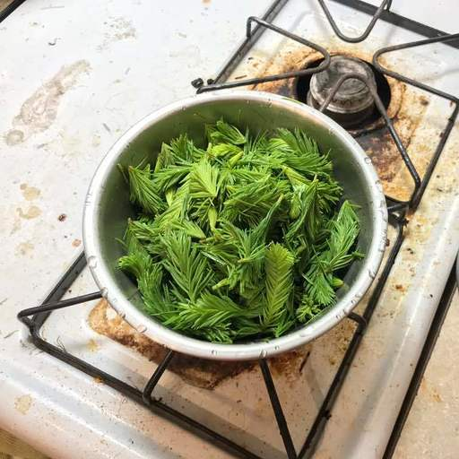

spruce beer
When I lived in Ithaca, I got into homebrewing. Hearing this my brother Winston showed me a video by Jon Townsend discussing the history of spruce beer in America and encouraged me to brew some. The next spring I went into Hammond Hill State Park (a place introduced to me by David Mehrle on an unrelated occasion) and collected (Norway) spruce tips with the help of Gennady Uraltsev. I crudely adapted a pale ale recipe from Charlie Papazian's book, replacing most of the hops with spruce tips.

I was very pleased with the results, and found the flavor to be unique. Very smooth, a little citrus, a little pine, easy drinking. I brewed a larger batch the next spring. Before leaving Ithaca I passed the idea on to Will Clark, who brewed a batch which I very much enjoyed. I hope he still brews it.
Since moving to Taiwan I have not picked up the hobby. One night I went to an event at a neighborhood cafe and talked to someone from a local brewery about this experience. I woke up the next morning with a yearning for spruce beer and thought that, aside from brewing it myself, I could share it more widely in the hopes that some day, it will be easy to find.
The following recipe can be considered as a starting point. Again, most of it is stolen from the Papazian book mentioned above. I used maple syrup because Winston gifted us a gallon of it at our wedding. Make sure you know what you're picking. Some plants are poisonous.
Makes 5.25 gal
6 lbs English 2 row pale
1/3 lbs English crystal
1/4 lbs aromatic malt
0.3 oz Kent Golding
0.3 oz Northdown
roughly 1 lb of spruce tips
6 oz maple syrup
1.5 tsp gypsum
1/4 tsp Irish moss
1) Add half of the gypsum to 6.5 quarts water (13 quarts for BIAB), heat to 143 F (147 F for BIAB)
2) Add malts, hold at 133 F for 30 mins
3) Add 3 quarts (1 gallon for BIAB) boiling water to raise temperature to 155 F (158 F for BIAB), hold at 144-155 F for 45 mins
4) Raise temperature to 158 F, hold for 10-20 mins (add 1 gallon for BIAB)
5) Raise to 167 F, then splarge with 3.5 gal water at 170 F with gypsum (with 1.5 gallons for BIAB)
6) Boil wort, add maple syrup, spruce, all hops @ 60 mins
7) Add Irish moss @ 10 mins
8) Ferment for 2 weeks before priming and bottle conditioning
back to homepage